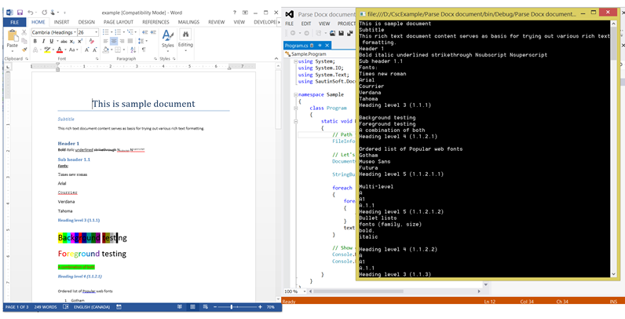

This C# example shows how to parse DOCX document using a free "DOCX Document .Net" library. Using this library your application can do following with DOCX: parse, create, edit and save.
Main Functions

So, here we'll show you in details how to parse an existing DOCX document in C#.
Very simple example. For example, we've the DOCX file: example.docx (please see in att. file). Let's extrace all text from it and render to Console.
Step 1: Launch Visual Studio. Click File->New Project->Visual C# Console Application.
Type the application name and location, for example "Parse Docx document" and "c:\samples".
Step 2: In the Solution Explorer right-click on "References" and select "Add Reference". Next add a reference to the "SautinSoft.Document.dll".
Step 3: So, we've created an empty C# console application. Now type the C# code to parse "example.docx".
Step 4: Please insert c# code in your console application. Now build the application and launch it.
Well done! Our congratulations, with help of the "DOCX Document .Net" library we've parsed our DOCX and extracted all text from it.
using System; using System.IO; using System.Text; using SautinSoft.Document; namespace Sample { class Program { static void Main(string[] args) { // Path to Docx file. FileInfo pathToDocx = new FileInfo(@"c:\example.docx"); // Let's parse docx docuemnt and get all text from it. DocumentCore docx = DocumentCore.Load(pathToDocx.FullName); StringBuilder text = new StringBuilder(); foreach (Paragraph par in docx.GetChildElements(true, ElementType.Paragraph)) { foreach (Run run in par.GetChildElements(true, ElementType.Run)) { text.Append(run.Text); } text.AppendLine(); } // Show extracted text. Console.WriteLine(text); Console.ReadLine(); } } }
using System; using System.IO; using System.Text; using SautinSoft.Document; namespace Sample { class Program { static void Main(string[] args) { // Path to Docx file. FileInfo pathToDocx = new FileInfo(@"c:\example.docx"); // Let's parse docx docuemnt and get all text from it. DocumentCore docx = DocumentCore.Load(pathToDocx.FullName); StringBuilder text = new StringBuilder(); foreach (Paragraph par in docx.GetChildElements(true, ElementType.Paragraph)) { foreach (Run run in par.GetChildElements(true, ElementType.Run)) { text.Append(run.Text); } text.AppendLine(); } // Show extracted text. Console.WriteLine(text); Console.ReadLine(); } } }
Requires only .Net 4.0 or above. Our product is compatible with all .Net languages and supports all Operating Systems where .Net Framework can be used. Note that DOCX Document .Net is entirely written in managed C#, which makes it absolutely standalone and an independent library.